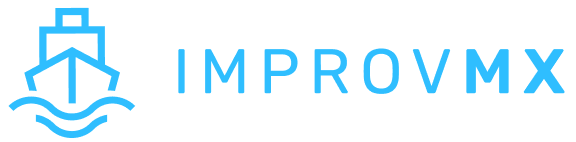

How to Buy a SaaS: ImprovMX
Gave up on 0-1, Trying for 1-10
I'm officially the new owner of ImprovMX! It's an email-forwarding SaaS with a beautiful design, nice technical niche, and fantastic organic growth.

Let me take a step back to explain how I got here.
How I Got Here
Early this year, I left my 9-5 for entrepreneurship. I knew of "acquisition entrepreneurship"—buy & grow something rather than build from scratch—but decided to launch something to get my feet wet first.
I launched TaxEstimate.fyi which got some traction but had no path to revenue (see post). I then launched AutoExpense.ai. The idea was to first create a landing page, validate the idea with ads, and only then build it. It also failed. Perhaps I'll write more on it someday, but in short, clicks & sign ups ≠ paying customers. I had a commoditized product in a competitive space, and it would be a long grind to cut my slice out of the market.
After that, I took a break for a month or two, traveled, focused on myself. I soon got bored and started seriously looking at buying a business. The thought process:
- Wow 0-1 is hard. I feel a deep pit in my stomach at the thought of taking another of my mediocre ideas and struggling mightily to make it work.
- I've been working, saving, and investing for over a decade now. I don't need to start from 0, and I should use capital leverage to my advantage.
- When buying a business, you pay for current and expected future profits. But basically for free, you get years of a risky search for product market fit taken on by the founder(s). Ultimately 0-1 isn't worth my time/effort unless I'm truly confident or passionate about an idea.
Doing My Homework
So I read everything I could on acquisition entrepreneurship. My favorites:
- Buy Then Build by Walker Deibel — kind of the acquisition bible. It's more for buying brick & mortar businesses, but still a great primer.
- Acquiring Minds Youtube Channel — deep dive interviews with people who've bought businesses. Also mostly brick & mortar, but there are some SaaS/ecommerce videos in there.
- Acquisitions Anonymous YouTube Channel — a group of entrepreneurs meet weekly to evaluate listings. Very useful for getting a feel of what you should be looking for in different types of business listings.
- Andrew Pierno of XO Capital — a guy who specifically buys small SaaS' and writes about the process. Golden!
The Search
I started looking at listings from Flippa, Acquire, QuietLight, etc. This was the "naive optimism" phase of the Dunning-Kruger curve. There are literally thousands of listings available. I thought I would spend a few hours looking through them, put a few offers in, and have a business in a few weeks.
But I soon entered the trough of disillusionment. Many listings looked decent, but on digging in, I found serious problems (massaged metrics, declining growth, commoditized product, etc.). Days became weeks, and weeks became months, without anything to show for. I often worried if I would ever find a business I wanted to buy.
False Starts
I did eventually find something. It was a QuietLight listing for a 10+ year old SaaS in the recruitment space. It looked old and would need a UI redesign, but it had stable revenues and wasn't too complicated, so I figured it would be a not too expensive starting point. I messaged the broker, video called the founder, and submitted a strong LOI (full asking price, SBA-loan, would pay all-cash if loan fell through). The broker and founder initially liked me, but eventually took someone else after stringing me along for a few weeks.
A little dismayed, but I was back on the search. At this point, I had a pretty clear idea on my criteria:
- SaaS, not e-commerce. I wanted to leverage my pre-existing skill set.
- At least 3 years old
- Nothing hype (crypto, AI, etc.). I want a boring stable business.
- Revenue: at least stable, ideally growing. Nothing declining.
This seems like a fairly short requirements list. Most notably, I wasn't even requiring a working distribution channel. But even then, there were very few qualified listings and they were all at a high 5x multiple with multiple other buyers.
I did eventually find a second SaaS on acquire.com. It was a knowledge base SaaS very similar to the first one (old, stable, needs a redesign, needs someone to figure out growth). I put an all-cash asking price offer on it, and the founder agreed! I was excited to finally be moving forward on something.
ImprovMX Appears
But the very next day, a QuietLight listing hits my inbox. It's an email forwarding SaaS, and when I sign the NDA and see ImprovMX, my jaw drops. ImprovMX is a product I already use and love. When I started indie hacking, I literally thought "wow, if I could build an ideal SaaS, I would build ImprovMX. I wish I had that idea". And here that business was for sale, and in my price range!
I immediately sent an email to the ImprovMX broker, scheduled a call with the founders the next morning, and seriously reviewed all the business details. The next morning, I had the call, and found Cyril and Antoine to be absolutely wonderful founders, and more importantly, trustworthy, and they liked my entrepreneurial fit as well. I submitted an LOI about 2 hours later. And simultaneously broke the LOI with the prior SaaS—luckily, I was polite and fair about it, so the other founder didn't take it personally and found another buyer soon afterwards!
Why It's a Perfect Fit
There's a truth to buying or building a business, that every business has sh*t, and you need to pick the type of sh*t you want to eat or that you're good at eating. That said, ImprovMX is a nearly ideal business for me for two main reasons:
- The weakness of this business is it's technical complexity. The average buyer won't be able to handle the technical & reliability requirements. But I've built a career out of becoming a top tier Site Reliability Engineer.
- The strength of the business is very strong organic growth. It's one of those "build a quality product, and people will find you" dream SaaS businesses. This complements my weakness in sales, marketing, and distribution.
So, its weakness is my strength, and its strength is my weakness, perfect complement.
So a few days later, I had a counter signed LOI. I beat other qualified buyers by offering a good price, being a good fit, and showing extreme sincerity in wanting a quick & easy close.
Due Diligence & Close
Next was the due diligence and transition process. Despite this being my first acquisition, it ended up being fairly manageable, especially for someone not bogged down by a 9-5.
In broad strokes:
- technical due diligence (I would evaluate the code myself)
- product due diligence (fully understand the product, it's competitors, and know how to sell it)
- financial due diligence (I paid Centurica to do this for me, basically verifying the earnings and expenses).
- Legal (draft an Asset Purchase Agreement)
- Form a business entity to acquire the business
- Get the money ready to wire
- Migrate all the accounts
In between those lines, there were plenty of unexpected complications and roadblocks. But ultimately having a collaborative attitude with the sellers was key to success. Piece of advice: every business is going to be much more hassle than you envisioned. Go after something worth your time (large enough MRR), otherwise you'll give up. If you can't afford something good yet, I recommend waiting and saving up rather than making the mistake of buying too small.
What's Next
And here we are! At the close of 2024, and I own a SaaS that I'm super proud of. It's funny because I created a 2024 EOY goal on my calendar to have a business with some MRR. I deleted it in dismay back in November, thinking there's no way I'd hit it with no ideas and deal flow drying up EOY. But then ImprovMX appeared, and I actually hit my stretch goal.
Now, it's on to scaling ImprovMX! After getting a handle on everything new, I'll soon be focusing on scaling the team up to create the bandwidth for new features and improved customer service.
Huge thanks to Antoine and Cyril for deciding to sell their baby to a first time acquirer! They took a bet on me, and I tried my best to be a partner beyond reproach throughout the process.
And special thanks to Afanasiy Yermakov, for being a perpetual sounding board on this entrepreneurial journey, wouldn't be here without him. Checkout his awesome business, Foldology!